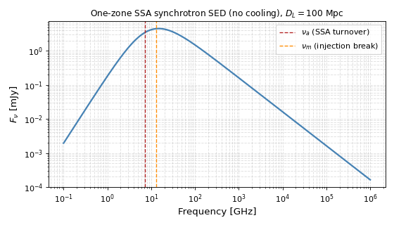
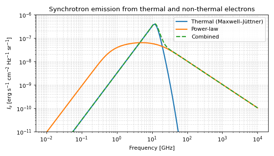
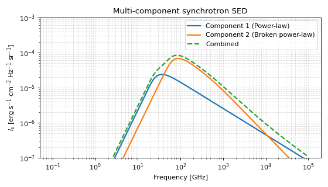
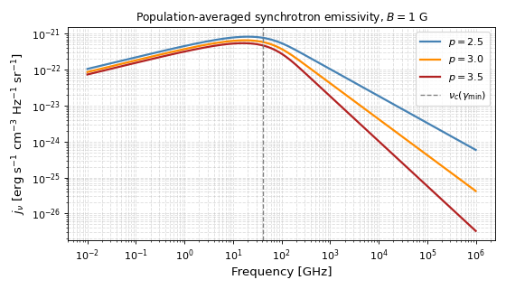

Synchrotron Emission Overview#
Synchrotron radiation, produced by relativistic electrons spiraling in a magnetic field, is the dominant emission process in the radio and X-ray afterglows of many astrophysical transients. It governs the multi-wavelength light curves of radio supernovae [1], gamma-ray burst afterglows [2], and the delayed radio flares of tidal disruption events [3]. Interpreting these observations requires a modeling framework that can handle a wide range of physical regimes, from non-relativistic shocks to mildly-relativistic ejecta, while consistently tracking the microphysical processes that shape the spectrum.
Trilobite provides an end-to-end synchrotron modeling toolkit: from the fundamental single-electron physics through population-averaged emission and radiative cooling, up to the broadband one-zone spectral energy distributions (SEDs) used directly in multi-wavelength fitting and Bayesian inference. The infrastructure is intentionally layered — each level can be used independently or composed into a full modeling pipeline.
Hint
For those unfamiliar with the physics of synchrotron radiation, Synchrotron Radiation Theory provides a self-contained introduction to the key concepts, equations, and spectral regimes. Additionally, Rybicki and Lightman[4] is a classic reference for the underlying physics and mathematical formalism. Lu[5] provides a more in-depth discussion with several useful results applied here.
Module Overview#
In a typical synchrotron problem, the user starts with a physical model of a shock or outflow and must determine the synchrotron emission (typically and SED or lightcurve) from that source. This typically involves a few intermediate steps:
The Dynamical Model: The user understands the dynamics of the emitting region (e.g. the shock speed, and radius, the jet opening angle, the density profile of the ambient medium, etc.). This is not the responsibility of the synchrotron module, but rather of the other physics modules.
Microphysical Closure: The user must then convert the macroscopic shock parameters (e.g. the post-shock thermal energy density) into the microphysical parameters that govern the electron distribution and magnetic field strength. Various such prescriptions exist in the literature, and are implemented in the
microphysicssubmodule.SED Modeling: Finally, the user must compute the observable SED from the microphysical parameters. This is the responsibility of the
SEDssubmodule. Depending on the type of SED model (see details below), this step may have some sub-steps.
The result is a predicted SED that can be compared to observations, used in light curve modeling, or fed into a Bayesian inference pipeline to constrain the underlying physical parameters of the source.
Module Structure#
The synchrotron module is organized into four submodules, each responsible for a
distinct layer of the modeling stack. Users working with high-level SED models
typically only interact directly with SEDs
and microphysics; the lower layers are
used implicitly.
Module |
Responsibility |
|---|---|
Fundamental quantities relevant to synchrotron modeling. This module is of primary use to developers and domain experts who want to understand or modify the underlying algorithms. See Core Synchrotron Tools. |
|
Tools for constructing and normalizing electron distribution functions and for connecting macroscopic shock parameters to microphysical parameters through closure relations. See Synchrotron Microphysics. |
|
SED models for computing the observable spectrum from a given set of physical parameters. This is the primary interface for users modeling synchrotron emission from astrophysical sources. It is also the deepest, with many options for different physical regimes and levels of complexity. See Synchrotron Spectral Energy Distributions. |
|
Radiative cooling engines for synchrotron and inverse-Compton losses. Each engine exposes the cooling rate \(dE/dt\), cooling time \(t_{\rm cool}\), and the cooling Lorentz factor \(\gamma_c\). See Radiative Cooling Engines. |
Useful External Modules#
In addition to the core synchrotron modules, a few other modules from other parts of the codebase are commonly used in various synchrotron modeling contexts:
Module |
Use case |
|---|---|
Provides the dynamical evolution of the shock or outflow, which is a key input to the synchrotron modeling. The dynamics determine how the shock parameters (e.g. radius, velocity, thermal energy density) evolve with time, which in turn affect the microphysical parameters and the resulting SED. |
Synchrotron Microphysics#
See also
Synchrotron Microphysics Describes the detailed API for synchrotron microphysics. Synchrotron Radiation Theory Describes the theory of the synchrotron microphysical closures.
Before generating an SED, the user must usually connect some knowledge of the macroscopic parameters of the emitting region (e.g. the post-shock thermal energy density) to the microphysical parameters that govern the electron distribution and magnetic field strength. This is typically done through a closure relation that specifies how the shock energy is partitioned into electrons and magnetic fields.
A common choice throughout the modern literature (e.g. Margutti et al.[6], DeMarchi et al.[1], Wu et al.[3], etc.) is to introduce the parameters \(\epsilon_e\) and \(\epsilon_B\), which represent the fraction of the thermal energy density that goes into relativistic electrons and magnetic fields, respectively.
In this formulation, one then needs to choose that type of electron distribution to use for the synchrotron emitting electrons. This will be the primary determinant of the resulting SED. Trilobite provides support for the following:
Power-law distributions: The most common choice in the literature, where the electron number density follows a power-law in Lorentz factor \(N(\gamma) \propto \gamma^{-p}\) above some minimum Lorentz factor \(\gamma_{\min}\). This is the default assumption in the one-zone SED models.
Thermal distributions: A Maxwell-Jüttner distribution of electrons, which may be more appropriate for highly-relativistic shocks or for the thermal pool of electrons that do not get accelerated but are nonetheless thermally relativistic and contribute to the synchrotron emission.
Broken power-law distributions: A power-law distribution with a break at some Lorentz factor, which can be used to model cooling breaks or other features in the electron spectrum.
Thermal+PL distributions: A combination of a thermal Maxwell-Jüttner distribution and a non-thermal power-law tail, which can be used to model scenarios where there is a significant thermal population of electrons in addition to the accelerated non-thermal population.
Combined with the closure relations that connect the macroscopic shock parameters to the microphysical parameters, the choice of electron distribution then determines the normalization of the electron spectrum and the magnetic field strength, which in turn determine the characteristic frequencies and fluxes of the resulting synchrotron SED.
The microphysics submodule provides a number of tools for doing these
sorts of calculations.
Example: Normalize a Power-Law Electron Distribution
This example computes the normalization \(N_0\) of a power-law electron distribution under the equipartition closure, given a magnetic field strength and microphysical parameters.
import numpy as np
import astropy.units as u
from trilobite.radiation.synchrotron.microphysics import compute_PL_norm_from_magnetic_field
B = 0.5 * u.G
epsilon_B = 0.1
epsilon_E = 0.1
gamma_min = 100.0
p = 3.0
N0 = compute_PL_norm_from_magnetic_field(
B=B,
p=p,
epsilon_B=epsilon_B,
epsilon_E=epsilon_E,
gamma_min=gamma_min,
)
Example: Normalize a Combined Thermal + Power-Law Distribution
This example computes the normalization of a hybrid electron population consisting of a thermal (Maxwell–Jüttner) component and a non-thermal power-law tail, using the equipartition closure.
import numpy as np
import astropy.units as u
from trilobite.radiation.synchrotron.microphysics import compute_MJD_and_PL_norm_from_magnetic_field
B = 0.5 * u.G
epsilon_B = 0.1
epsilon_E = 0.1
Theta = 200.0 # dimensionless temperature (kT / m_e c^2)
gamma_min = 100.0
p = 3.0
delta = 0.5 # fraction of energy in thermal component
N_therm, N0_pl = compute_MJD_and_PL_norm_from_magnetic_field(
B=B,
Theta=Theta,
p=p,
delta=delta,
epsilon_B=epsilon_B,
epsilon_E=epsilon_E,
gamma_min=gamma_min,
)
API Summary#
A few of the key functions in this module are included below. For a more in-depth introduction to
this module, see Synchrotron Microphysics. The full API can be found at
microphysics.
API Summary
Compute the magnetic field strength from the thermal energy density and epsilon_B. |
|
Compute the normalization of a power-law electron distribution from microphysical energy-partition parameters. |
|
Compute the normalization of a power-law electron distribution from microphysical energy-partition parameters. |
|
Compute the normalization of a broken power-law electron distribution from microphysical parameters. |
|
Compute the normalization of a broken power-law electron distribution from the thermal energy density. |
|
Compute the total number density of a Maxwell-Jüttner electron distribution from the magnetic field. |
|
Compute the total number density of a Maxwell-Jüttner electron distribution from the thermal energy density. |
|
Compute normalizations for a mixed Maxwell-Jüttner plus power-law electron distribution from the magnetic field. |
|
Compute normalizations for a mixed Maxwell-Jüttner plus power-law electron distribution. |
|
Compute the bolometric synchrotron emissivity from an explicit magnetic field and power-law electron distribution. |
|
Compute the bolometric synchrotron emissivity assuming full equipartition. |
|
Compute the bolometric synchrotron emissivity from the magnetic field and a broken power-law electron distribution. |
|
Compute the bolometric synchrotron emissivity for a broken power-law electrondistribution assuming equipartition. |
Generating Synchrotron SEDs#
See also
Synchrotron Spectral Energy Distributions Describes the detailed API for generating synchrotron SEDs. Methods: Single-Zone Synchrotron SEDs Describes the theory of the one-zone synchrotron SED models. Methods: Quadrature Based SEDs Describes the theory of numerical synchrotron SEDs.
Synchrotron SEDs are (by virtue of the many physical considerations at play) quite a complex topic, and the
corresponding SEDs submodule is the most extensive part of the synchrotron
toolkit. Broadly speaking, SEDs are categorized by the physical processes they include:
One-Zone vs. Many Zone: One-zone SEDs assume a single homogeneous emitting region, whereas many-zone SEDs can model more structured sources. These are; however, generally more restrictive, and can be quite difficult to fit to data due to the large number of free parameters. Trilobite currently only provides one-zone SED models.
Analytic vs. Numerical: Analytic SEDs are built from piecewise power-law segments joined at the characteristic break frequencies, while numerical SEDs are computed by numerically integrating the full synchrotron kernel over an arbitrary electron distribution. The analytic SEDs are faster to compute and easier to fit, but the numerical SEDs can handle more complex electron distributions and physical regimes. They are also more accurate.
Physical Content: SEDs may contain various physical processes such as radiative cooling, synchrotron self-absorption, and inverse-Compton scattering. The choice of which processes to include depends on the source being modeled and the available data.
Relativistic Corrections: For relativistic sources, the SED must include Doppler boosting and redshift corrections. Trilobite SEDs include these corrections by default.
The goal of the Trilobite SED module is to provide a comprehensive suite of these SED scenarios and to ensure that domain experts can easily extend the existing modules to generate new SED models as needed. The API is designed to be flexible and modular, allowing users to mix and match different physical processes and assumptions as needed for their specific modeling scenario.
Analytic SEDs#
Analytic synchrotron SED models provide a fast and physically interpretable way to compute broadband emission from a given electron population. Rather than evaluating the full synchrotron kernel, these models approximate the spectrum as a series of piecewise power-law segments joined at a set of characteristic break frequencies.
Important
A useful feature of analytical SEDs in Trilobite is that they are constructed in a 2-step process:
Normalization: Analytical SED classes carry a
from_physics_to_paramsmethod, which converts the physical parameters of the source into the phenomenological parameters of the SED (e.g. break frequencies, flux normalization, etc.).SED Evaluation: The
sedmethod then takes these phenomenological parameters and assembles the piecewise power-law spectrum.
The separation between the two ensures that the microphysical closure (performed in step 1) is decoupled
from the complex logic of assembling the SED (performed in step 2). Thus, a user may modify their microphysical assumptions
and skip directly to step 2 without having to re-derive the SED assembly logic. Likewise, analytical SEDs can
provide a from_params_to_physics method that performs the inverse operation, allowing users to start
with observed SED parameters (e.g. a measured peak frequency and flux) and recover the underlying physical
parameters of the source.
In practice, there are 3 regimes in which the analytic SEDs can be derived and implemented:
Power-Law Electron Distributions (Implemented): The most common scenario in the literature, where the electron distribution is a power-law in Lorentz factor. This is the default assumption in the one-zone SED models provided by Trilobite. These SEDs can include both cooling and SSA.
Thermal Electron Distributions (In Development): In some scenarios, the electron distribution may be better described by a thermal Maxwell-Jüttner distribution.
Thermal + PL Electron Distributions (In Development): A combination of a thermal Maxwell-Jüttner distribution and a non-thermal power-law tail, which can be used to model scenarios where there is a significant thermal population of electrons in addition to the accelerated non-thermal population.
The following are currently available in Trilobite:
Class |
Cooling |
SSA |
Use when… |
|---|---|---|---|
No |
No |
Simple optically-thin power-law; no breaks beyond \(\nu_m\) |
|
Yes |
No |
Optically thin emission with a fast- or slow-cooling break |
|
No |
Yes |
Dense or compact sources with an SSA turnover and negligible cooling |
|
Yes |
Yes |
Full broadband modeling – the most general option |
Example: A Typical SSA Synchrotron SED
import numpy as np
import matplotlib.pyplot as plt
from astropy import units as u
from trilobite.radiation.synchrotron import PowerLaw_SSA_SynchrotronSED
# ── Instantiate the SED model ─────────────────────────────────────────────
# SED objects are stateless: physical parameters are passed at call time,
# not stored on the object. This makes them safe to reuse in parameter
# sweeps and inference loops without hidden state.
sed = PowerLaw_SSA_SynchrotronSED()
# ── Physical source parameters ────────────────────────────────────────────
# These are the quantities a user would typically know from the source model
# or shock dynamics:
B = 0.5 * u.G # post-shock magnetic field strength
R = 1e16 * u.cm # characteristic emitting-region radius
gamma_min = 100.0 # minimum electron Lorentz factor
p = 3.0 # power-law index of the electron distribution
eps_E = 0.1 # fraction of shock energy in electrons
eps_B = 0.1 # fraction of shock energy in magnetic field
D_L = 100 * u.Mpc # luminosity distance to the source
# ── Convert physical parameters to phenomenological SED parameters ────────
# from_physics_to_params applies the equipartition closure: given B and R
# it computes the injection frequency nu_m, the SSA frequency nu_a, and the
# normalization F_norm, together with a solid-angle factor omega.
params = sed.from_physics_to_params(
B=B, R=R,
gamma_min=gamma_min,
p=p,
epsilon_E=eps_E,
epsilon_B=eps_B,
luminosity_distance=D_L,
pitch_average=True, # average over electron pitch angles
)
# ── Frequency grid: radio through soft X-ray ─────────────────────────────
nu = np.logspace(8, 15, 500) * u.Hz
# ── Evaluate the SED ──────────────────────────────────────────────────────
# The sed() method assembles the piecewise power-law spectrum. Note that
# nu_a (the SSA turnover) is determined internally from nu_m, omega, p, and
# gamma_m -- it does not need to be supplied explicitly.
Fnu = sed.sed(
nu,
nu_m=params['nu_m'], # injection break frequency
F_norm=params['F_norm'], # flux normalization at nu_m
nu_max=params['nu_max'], # high-frequency cutoff
omega=params['omega'], # effective solid angle (encodes R and D_L)
gamma_m=gamma_min, # minimum Lorentz factor (sets nu_a position)
p=p,
)
# ── Plot ──────────────────────────────────────────────────────────────────
fig, ax = plt.subplots(figsize=(7, 4))
ax.loglog(
nu.to(u.GHz).value,
Fnu.to(u.mJy).value,
color='steelblue', lw=2,
)
# Mark the characteristic frequencies returned by from_physics_to_params
ax.axvline(
params['nu_a'].to(u.GHz).value,
ls='--', color='firebrick', lw=1.2, label=r'$\nu_a$ (SSA turnover)',
)
ax.axvline(
params['nu_m'].to(u.GHz).value,
ls='--', color='darkorange', lw=1.2, label=r'$\nu_m$ (injection break)',
)
ax.set_xlabel('Frequency [GHz]', fontsize=12)
ax.set_ylabel(r'$F_\nu$ [mJy]', fontsize=12)
ax.set_title(
r'One-zone SSA synchrotron SED (no cooling), $D_L = 100$ Mpc',
fontsize=11,
)
ax.legend(fontsize=10)
ax.grid(True, which='both', ls='--', alpha=0.4)
plt.tight_layout()
(Source code, png, hires.png, pdf)
{kind=link}
{kind=link}

Numerical SEDs#
In addition to the analytical SEDs as described above, Trilobite also provides a numerical SED engine that computes the synchrotron spectrum by numerically integrating the full synchrotron kernel over an arbitrary electron distribution. This allows for more complex electron distributions and physical regimes that may not be well-described by the piecewise power-law approximations of the analytical SEDs.
Note
The numerical SED engine relies on pre-tabulating synchrotron kernel functions to ensure fast execution of the numerical integrals. Some effort has gone into optimizing this algorithm to ensure that numerical SEDs can be computed efficiently enough for use in Bayesian inference pipelines, but they will generally be slower to compute than the analytical SEDs.
The archetypal numerical SED class is NumericalSynchrotronEngine,
which provides robust methods for computing the emissivity, absorption coefficients, specific intensities, and
flux densities. To use these engines, the following steps are generally followed:
Instantiate the Engine: Create an instance of the numerical SED engine class.
Load the Synchrotron Kernel: Pre-compute and load the synchrotron kernel (either the pitch-angle-averaged or single-pitch-angle version) into the engine. This step is necessary to ensure that the numerical integrals can be performed efficiently. This can be done with the
load_avg_first_kernel()orload_first_kernel()methods.Compute the SED: Use the public API methods to compute the desired radiative quantities (e.g. emissivity, absorption coefficient, flux density) for a given set of physical parameters and an arbitrary electron distribution. The flux density may be computed with the
compute_flux_density()method, which includes Doppler and redshift corrections by default.
See Synchrotron Spectral Energy Distributions for more details on the API and the physical assumptions built into the numerical SED engine.
Example: Numerical Synchrotron Emission from Thermal and Non-Thermal Electrons
This example computes the synchrotron specific intensity from three electron populations: a thermal Maxwell–Jüttner distribution, a non-thermal power-law, and their combination. The result illustrates how different components contribute to the overall spectrum.
import numpy as np
import matplotlib.pyplot as plt
from astropy import units as u
from astropy import constants as const
from trilobite.radiation.synchrotron.SEDs.numerical import NumericalSynchrotronEngine
from trilobite.radiation.synchrotron.microphysics import (
compute_MJD_and_PL_norm_from_magnetic_field,
get_maxwell_juttner_distribution,
get_power_law_distribution,
)
# ---------------------------------------------------------------------
# Initialize synchrotron engine
# ---------------------------------------------------------------------
engine = NumericalSynchrotronEngine()
engine.load_avg_first_kernel()
# ---------------------------------------------------------------------
# Physical parameters
# ---------------------------------------------------------------------
B = 1.0 * u.G
R = 1e17 * u.cm
epsilon_e = 0.1
epsilon_B = 0.01
delta = 0.99999 # fraction of energy in thermal component
# Thermal population
T = 1e10 * u.K
Theta = (const.k_B * T / (const.m_e * const.c**2)).decompose().value
# Power-law population
p = 3.0
gamma_min = 50.0
gamma_max = 1e10
# ---------------------------------------------------------------------
# Normalize electron distributions (equipartition closure)
# ---------------------------------------------------------------------
N_therm, N_pl = compute_MJD_and_PL_norm_from_magnetic_field(
B=B,
Theta=Theta,
p=p,
delta=delta,
epsilon_E=epsilon_e,
epsilon_B=epsilon_B,
gamma_min=gamma_min,
gamma_max=gamma_max,
)
mjd = get_maxwell_juttner_distribution(Theta, norm=N_therm)
pl = get_power_law_distribution(p=p, norm=N_pl,
gamma_min=gamma_min, gamma_max=gamma_max)
# ---------------------------------------------------------------------
# Grids
# ---------------------------------------------------------------------
gamma = np.geomspace(1, gamma_max, 200)
nu = np.geomspace(1e-2, 1e4, 200) * u.GHz
# ---------------------------------------------------------------------
# Compute synchrotron specific intensity
# ---------------------------------------------------------------------
I_mjd = engine.compute_specific_intensity(nu, R, B, mjd(gamma), gamma)
I_pl = engine.compute_specific_intensity(nu, R, B, pl(gamma), gamma)
I_tot = engine.compute_specific_intensity(nu, R, B,
mjd(gamma) + pl(gamma), gamma)
# ---------------------------------------------------------------------
# Plot
# ---------------------------------------------------------------------
fig, ax = plt.subplots(figsize=(7, 4))
ax.loglog(nu, I_mjd, label='Thermal (Maxwell–Jüttner)', lw=2)
ax.loglog(nu, I_pl, label='Power-law', lw=2)
ax.loglog(nu, I_tot, '--', label='Combined', lw=2)
ax.set_xlabel('Frequency [GHz]')
ax.set_ylabel(r'$I_\nu$ [erg s$^{-1}$ cm$^{-2}$ Hz$^{-1}$ sr$^{-1}$]')
ax.set_title('Synchrotron emission from thermal and non-thermal electrons')
ax.legend()
ax.grid(True, which='both', ls='--', alpha=0.4)
ax.set_ylim(1e-11, 1e-6)
plt.tight_layout()
plt.show()
(Source code, png, hires.png, pdf)
{kind=link}
{kind=link}

Example: Multi-Component Numerical Synchrotron SED
This example demonstrates how to construct a synchrotron spectrum from multiple emitting components. We combine emission from a simple power-law electron population and a broken power-law population with different physical conditions, illustrating how complex spectra can arise from superposed regions.
import numpy as np
import matplotlib.pyplot as plt
from astropy import units as u
from trilobite.radiation.synchrotron.SEDs.numerical import NumericalSynchrotronEngine
from trilobite.radiation.synchrotron.microphysics import (
compute_PL_norm_from_magnetic_field,
compute_BPL_norm_from_magnetic_field,
get_power_law_distribution,
get_broken_power_law_distribution,
)
# ---------------------------------------------------------------------
# Initialize synchrotron engine
# ---------------------------------------------------------------------
engine = NumericalSynchrotronEngine()
engine.load_avg_first_kernel()
# ---------------------------------------------------------------------
# Physical parameters (two emitting regions)
# ---------------------------------------------------------------------
B1, R1 = 1.0 * u.G, 1e16 * u.cm
B2, R2 = 10.0 * u.G, 1e13 * u.cm
epsilon_e = 0.1
epsilon_B = 0.01
# Electron distribution parameters
p = 2.5
gamma_c = 1e2
gamma_min = 1.0
gamma_max = 1e10
# ---------------------------------------------------------------------
# Normalize electron distributions (equipartition closure)
# ---------------------------------------------------------------------
N0_pl = compute_PL_norm_from_magnetic_field(
B1, p, epsilon_B, epsilon_e,
gamma_min=gamma_min, gamma_max=gamma_max
)
N0_bpl = compute_BPL_norm_from_magnetic_field(
B2, -p, -(p + 1), gamma_c,
epsilon_B, epsilon_e,
gamma_min=gamma_min, gamma_max=gamma_max
)
# Distribution functions
pl = get_power_law_distribution(
p, norm=N0_pl,
gamma_min=gamma_min, gamma_max=gamma_max
)
bpl = get_broken_power_law_distribution(
-p, -(p + 1), gamma_c,
norm=N0_bpl,
gamma_min=gamma_min, gamma_max=gamma_max
)
# ---------------------------------------------------------------------
# Grids
# ---------------------------------------------------------------------
gamma = np.geomspace(gamma_min, gamma_max, 500)
nu = np.geomspace(1e-1, 1e5, 500) * u.GHz
# Evaluate distributions
N_pl = pl(gamma)
N_bpl = bpl(gamma)
# ---------------------------------------------------------------------
# Compute synchrotron intensities
# ---------------------------------------------------------------------
I_pl = engine.compute_specific_intensity(nu, R1, B1, N_pl, gamma)
I_bpl = engine.compute_specific_intensity(nu, R2, B2, N_bpl, gamma)
I_total = I_pl + I_bpl
# ---------------------------------------------------------------------
# Plot
# ---------------------------------------------------------------------
fig, ax = plt.subplots(figsize=(7, 4))
ax.loglog(nu, I_pl, label='Component 1 (Power-law)', lw=2)
ax.loglog(nu, I_bpl, label='Component 2 (Broken power-law)', lw=2)
ax.loglog(nu, I_total, '--', label='Combined', lw=2)
ax.set_xlabel('Frequency [GHz]')
ax.set_ylabel(r'$I_\nu$ [erg s$^{-1}$ cm$^{-2}$ Hz$^{-1}$ sr$^{-1}$]')
ax.set_title('Multi-component synchrotron SED')
ax.legend()
ax.grid(True, which='both', ls='--', alpha=0.4)
ax.set_ylim(1e-7, 1e-3)
plt.tight_layout()
plt.show()
(Source code, png, hires.png, pdf)
{kind=link}
{kind=link}

Limitations#
Both analytic and numerical SED models share the one-zone assumption: the emitting region is treated as a single, homogeneous sphere. Multi-zone or stratified geometries must be handled by the user (e.g. by superposing several independent SED calls).
Analytic SEDs carry additional restrictions:
Power-law electrons only (currently). Thermal and thermal+PL analytic SEDs are in active development but not yet available. For non-power-law distributions, use the numerical engine.
Piecewise approximation near break frequencies. The real synchrotron spectrum transitions smoothly between spectral segments; the piecewise power-law formula introduces errors of order unity near the break. For precise fitting of data that straddles a break, the numerical engine is more reliable.
Closed-form closure required. The analytic break-frequency expressions assume standard equipartition microphysics. Non-standard closures (e.g. time-evolving \(\epsilon_e\), anisotropic pitch angles) cannot be folded in without modifying the closure.
Numerical SEDs have complementary limitations:
Static electron distribution. \(N(\gamma)\) is provided at a single instant; the engine does not self-consistently evolve the spectrum under cooling. Cooling breaks must be encoded in the distribution before it is passed in.
Grid-dependent accuracy. The numerical integrals are evaluated on the Lorentz-factor grid supplied by the user. Results are sensitive to grid resolution and extent — too coarse a grid or cutoffs that clip the emitting population will produce inaccurate spectra. As a rule of thumb, use at least \(\sim 200\) logarithmically-spaced points spanning the full range of contributing Lorentz factors.
Kernel pre-tabulation required. The synchrotron kernel must be explicitly loaded before any radiative quantity can be computed. This one-time setup step is cheap but is not automatic.
Slower than analytic SEDs. Because the full kernel convolution is evaluated numerically, the engine is substantially slower than the piecewise analytic models. For large parameter sweeps or MCMC inference, the analytic SEDs are preferred unless the electron distribution genuinely cannot be approximated as a power law.
API Summary#
API Summary
Analytic SEDs (trilobite.radiation.synchrotron.SEDs.one_zone)
The canonical 1-zone power-law synchrotron SED (uncooled, optically thin). |
|
Synchrotron SED with cooling but no self-absorption. |
|
Synchrotron SED with synchrotron self-absorption and no radiative cooling. |
|
Synchrotron spectral energy distribution with cooling and self-absorption. |
Numerical SED Engine (trilobite.radiation.synchrotron.SEDs.numerical)
Build and cache the interpolator for the first synchrotron kernel \(F(x)\). |
|
Build and cache the interpolator for the first synchrotron kernel \(F(x)\). |
|
Compute the comoving-frame synchrotron emissivity \(j_\nu\). |
|
Compute the comoving-frame synchrotron self-absorption coefficient \(|\alpha_\nu|\). |
|
Compute the comoving-frame synchrotron source function \(S_\nu = j_\nu / \alpha_\nu\). |
|
Compute the observer-frame specific intensity including Doppler boost and redshift. |
|
Compute the observer-frame spectral flux density \(F_\nu\). |
Electron Distribution Factories (trilobite.radiation.synchrotron.microphysics)
Return a callable ultra-relativistic Maxwell-Jüttner electron distribution. |
|
Return a callable power-law electron distribution. |
|
Return a callable broken power-law electron distribution. |
Core Synchrotron Quantities#
Hint
Core Synchrotron Tools contains the full API documentation for all functions described in this section.
At the core of synchrotron modeling are the gyrofrequency \(\nu_g = eB / (m_e c \gamma)\) and the critical synchrotron frequency \(\nu_c = 3 e B \gamma^2 / (4\pi m_e c)\). Nearly all synchrotron power from a single electron is emitted within roughly an order of magnitude of \(\nu_c\), so the critical frequency sets the characteristic scale of the spectrum.
core provides
compute_gyrofrequency(),
compute_nu_critical(),
compute_synchrotron_frequency(), and
compute_synchrotron_gamma() for these
frequency conversions. It also implements the private log-space backends for the
first synchrotron kernel \(F(x) = x\int_x^\infty K_{5/3}(z)\,dz\) and its
pitch-angle average \(\bar{F}(x)\) that are consumed by
NumericalSynchrotronEngine.
The example below builds a numerical engine, pre-computes the pitch-angle-averaged kernel, and evaluates the population-averaged emissivity \(j_\nu\) for a simple power-law electron distribution \(N(\gamma) \propto \gamma^{-p}\) at several spectral indices, illustrating how the emissivity slope tracks \(p\):
import numpy as np
import matplotlib.pyplot as plt
import astropy.units as u
from trilobite.radiation.synchrotron.core import compute_nu_critical
from trilobite.radiation.synchrotron.SEDs.numerical import NumericalSynchrotronEngine
B = 1.0 * u.G
gamma_min = 1e2
nu = np.logspace(7, 15, 400) * u.Hz
ps = [2.5, 3.0, 3.5]
colors = ['steelblue', 'darkorange', 'firebrick']
engine = NumericalSynchrotronEngine()
engine.load_avg_first_kernel()
fig, ax = plt.subplots(figsize=(7, 4))
for p, color in zip(ps, colors):
def N(gamma, p=p):
return np.where(gamma >= gamma_min, (gamma / gamma_min) ** (-p), 0.0)
j_nu = engine.compute_emissivity(nu, B=B, N=N, gamma_min=gamma_min, gamma_max=1e8)
ax.loglog(nu.to(u.GHz).value, j_nu.value, color=color, lw=2,
label=rf'$p = {p}$')
nu_c_min = compute_nu_critical(gamma=gamma_min, B=B)
ax.axvline(nu_c_min.to(u.GHz).value, ls='--', color='gray', lw=1.2,
label=rf'$\nu_c(\gamma_{{\min}})$')
ax.set_xlabel('Frequency [GHz]', fontsize=12)
ax.set_ylabel(r'$j_\nu$ [erg s$^{-1}$ cm$^{-3}$ Hz$^{-1}$ sr$^{-1}$]', fontsize=12)
ax.set_title(r'Population-averaged synchrotron emissivity, $B = 1$ G', fontsize=11)
ax.legend(fontsize=10)
ax.grid(True, which='both', ls='--', alpha=0.4)
plt.tight_layout()
(Source code, png, hires.png, pdf)
{kind=link}
{kind=link}

Further Reading#
The table below maps common modeling tasks to the relevant documentation:
If you want to… |
See… |
|---|---|
Understand the physics behind the module |
|
Work with fundamental quantities (kernels, single-electron spectra) |
|
Compute population-averaged emissivities and equipartition quantities |
|
Build or fit a broadband SED model |
|
Understand the SED spectral-regime derivations |
|
Model radiative cooling and the cooling break |
|
Learn about stratified synchrotron self-absorption |
|
Invert a relativistic synchrotron peak using equipartition (Barniol-Duran) |
|
Compute SEDs for arbitrary (non-power-law) electron distributions |